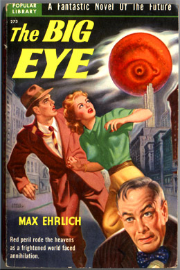

Couverture du n° 2 des Avon Fantasy Novels, intitulé La fille verte et racontant
l'histoire d'un monde étrange sous la
terre
Automne
France Soir publie en feuilleton Le Mystère des Soucoupes Volantes de Frank ScullyChaloupek, Henri 1997.
Un "péril rouge" menace d'annihiler le monde

Lors d'une rencontre aérienne à Longview, plus d'une centaine de personnes assistent aux évolutions de plusieurs
disques métalliques.
Publication aux éditions Henry Holt du livre de Scully, Behind the Flying Saucers.
Richard H. Hall entame sa carrière d'ufologue.
Dans le Devon, un mouton a le cou tranché par la chute d'un
bloc de glace de 7 kg.
Selon Betty Andreasson, une entité lui enlève son œil de son orbite. Puis une aiguille
souple d'un blanc brillant reliée à un long tube argenté est poussée profondément à l'arrière de son orbite.
L'aiguille a une de ces minuscules petites choses de verre à son extrémité. Elle ressent une minuscule
secousse ; l'aiguille est enlevée, re-orientée et poussée ailleurs dans sa tête. À nouveau une secousse est
ressentie comme si quelque chose avait été envoyé ou diffusé en moi. L'aiguille lumineuse est retirée et son
œil replacé. Il n'est pas mentionné si la boule à l'extrémité de l'aiguille était toujours présente Régression hypnotique en 1980 < Fowler, Raymond E.: The
Andreasson Affair, Phase Two. Englewood Cliffs. Prentice-Hall, 1982, pp. 169-170.